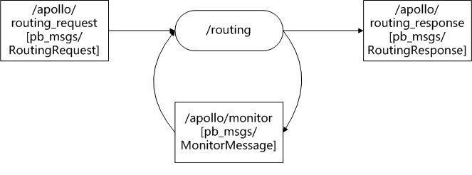

routing模块分析
功能：
基于请求，输出两点之间导航信息。
输入：
- 用户的起始和终止位置。/apollo/routing_request[pb_msgs/RoutingRequest]。
- HD map。
- /apollo/monitor[pb_msgs/MonitorMessage]。
输出：
- 请求的响应：/apollo/routing_response[pb_msgs/RoutingResponse],包含了最终的路由信息。
- /apollo/monitor[pb_msgs/MonitorMessage]。
节点I/O：

routing源码：
routing.cc和routing.h
- Name()函数：返回节点名字。
- Routing()：构造函数，初始化monitor_。
- Init()：节点初始化函数。
- 获取路由地图文件routing_map_file。
- 创建导航器navigator_ptr_。
- 读取导航配置文件：modules/routing/conf/routing.pb.txt到routing_conf_。
- 根据Adapter配置文件：modules/routing/conf/adapter.conf，创建nodehandle和响应topics。
- 设置路由请求话题的回调函数OnRouting_Request。这里为啥不直接使用rosservice？//TODO。
- OnRouting_Request()：处理请求。
- 输入路由请求。
- 执行SearchRoute()函数，根据routing_request，寻找路由，并设置routing_response。
- 发布routing_response。
navigation.cc和navigation.h：
- SearchRoute()函数：
- 显示请求命令的信息。
- 检查导航器是否ready。构造函数时打开。
- 通过初始化函数，将请求中的点转化为graph中的格式，并存储在way_nodes和way_s。
- 通过a star算法由way_nodes和way_s计算出路由点result_nodes。
- 将路由点result_nodes合并到response结构。
- SearchRouteByStrategy()函数： 主要是利用A star算法寻找一个全局路径。
- GetWayNodes()函数： 将request转化为拓扑图graph_中的点。